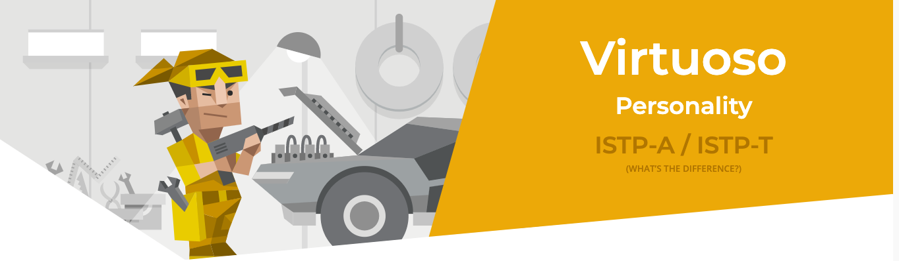

All About Me
My personality type is Virtuoso (ISTP-A). According to them Virtuoso is someone with the Introverted, Observant, Thinking, and Prospecting personality traits. They tend to have an individualistic mindset, pursuing goals without needing much external connection. They engage in life with inquisitiveness and personal skill, varying their approach as needed. I agree slightly but I do not agree with observant because I do not observe much at all
My Favorite class is computer science because I love to mess around with computers. I do not play any computer games at the moment but if I were some games I would play would be Genshin Impact(idk why I just got addicted), warframe, and call of duty.
My favorite Sports Teams
- Seattle seahawks
- Notre Dame
- chichago cubs